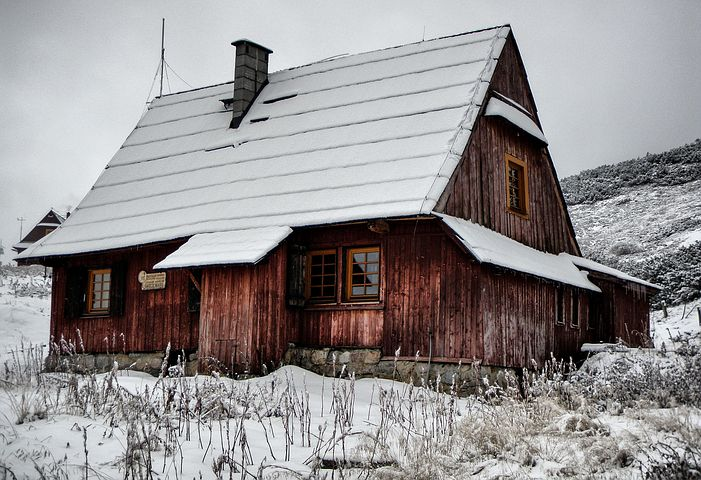
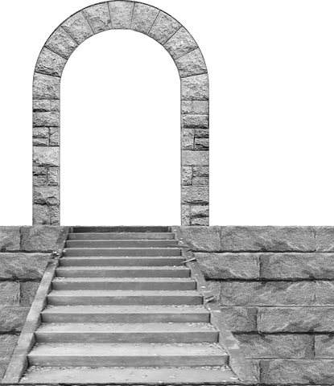
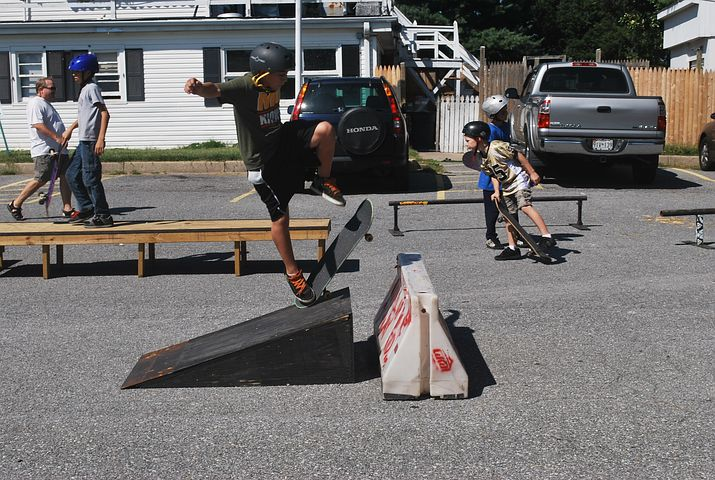
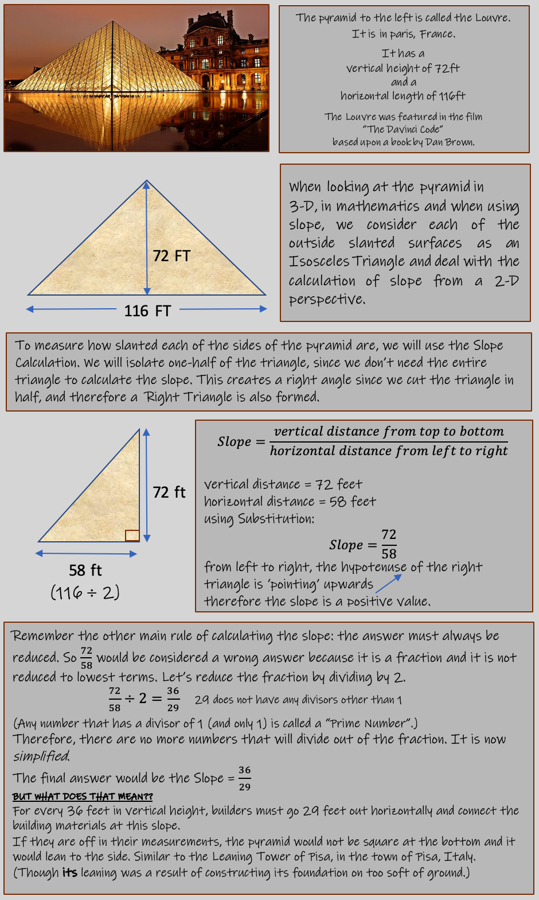
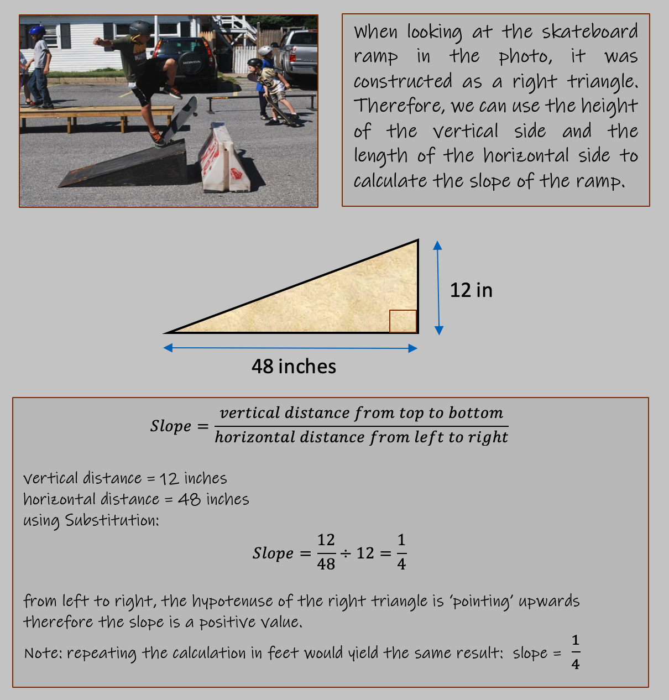
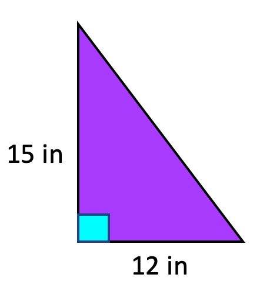
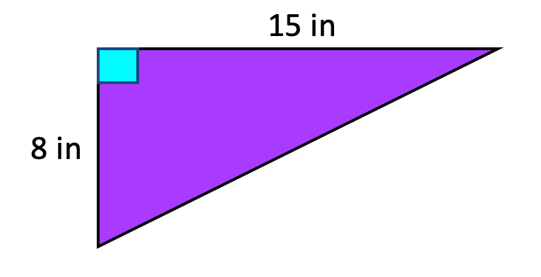
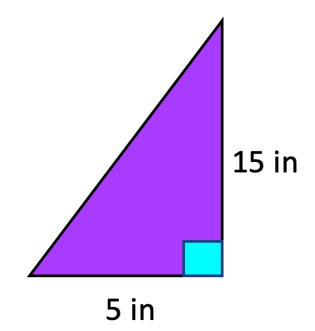

So the "slope" of a line is a measuremnet of how slanted something is.
The slope calculation can also help us to determine if the slope is slanted upwards ↗︎
or slanted downwards ↘︎
There are two "every-day" methods to determining the specific slope of an object.
- Using widths and heights and numbers to describe the slope
- Using degrees to describe the slope
In Geometry, you will focus on method #2. Both methods are equally important and will be used in Algebra 2 and higher-level math courses. It is very important for you to understand how to use both methods.
Below are some examples of how slope is used in everyday life.

Two examples of A-Frame houses are shown. Notice the mountains in the backgrounds
as this is where you will usually see these types of houses built. Ski Resorts also have a great
deal of buildings and houses that use the A-Frame architectural structure, due to the volume of
snow that they get.
The left side of the roof, starting from the bottom and tracing it towards the top, has a
slant that is going upwards to the top of the roof.
This is considered "positive" slope.
If you consider the right-hand side of the roof,
tracing it from left to right; from the top of the roof to the
bottom edge of the roof, the roof is slanted downwards.
This is called "negative" slope.
We can calculate how slanted an object is. Items with
larger slopes are steeper than items with a smaller slope.
For example, a slope = 1/5 is a very shallow slope. Slope = 5 is a very
steep slope, similar to an the A-Frame houses' rooftops.
The method for calculating slope was designed to be able to
measure the slope using distances between two locations on
the slanted surface. You can choose any two locations on the surface.
You will alway get the same answer for the slope regardless of which
two locations, or points, you pick.
The method to get the slope mesurement is to measure the distance
between the two locations.
There are two measurement that are used to calculate the
slope's value.
Measurement #1: measure the distance between the two points
vertically. This will give us the height between the two points.
Measurement #2: measure the distance between the two points
horizontally. This will give the distance between the two locations.
The ratio comparing the two measurements is written as a fraction.
In the numerator you substitute the vertical distance between the
two points.
In the denominator you substitute the horizontal distance between
the two points.
As a rule, any fraction answers that can be
reduced must be. For example, if your answer was 3/6, then you should
give the final answer as 1/2 (dividing the top and bottom by 3).
This rule is implied- meaning everytime they ask for the slope, you must automatically reduce
the fraction. They will never say ""reduce if possible"; always reduce
the answer if possible.
RULE: The fraction written to measure the slope's value MUST always be reduced.
Let's look at some pictures in which the slope would be used
to calulate how steep the slanted surfaces are:

Staircase Construction

Mansion Staircase
The Louvre In Paris
Mayan Pyramid at Chichen Itza, Mayan City
Construction of Skateboarding Ramps
When using slope, it is typically used in the design and
measurements phase in construction. We can calulate the
dimensions that are needed to build the item.
The dimensions of the staircase, or skateboard ramp,
or the dimensions of a pyramid, are all using the slope
in the construction plans to buid the item.
Slope of already built items and slope of natural structures on Earth: like mountains, hills,
and any slanted objects, are described using the slope. The slope can be measured using a
device called a clinometer. You can purchase one on the internet for about $100, but nowadays
you can also download some pretty cool and accurate clinometer in the app stores for free. Just search for 'clinometers'
and you will find many to choose from.
Clinometers will be used in upper-level math courses too. Geometry created the definiton and calculation methods
for slopes of items, and its wide-spread applications have been integrated into
many different areas of mathematics and construction.

It important to note, that the slope answer has no units.
The really useful part of this, is we can deal with the
two values 36/29 using any units we want.
So measuring 36 feet up and 29 feet over in construction to build an
intended slope, is the same as measuring 36 inches up and 29 inches over,
or 36 cm up and 29 cm over.
Each of these will produce the same slope, and therefore the same slant.
This freedom gives us a great deal of unique designing-capabilities when buiding objrcts.

Now that you have learned about slope and how to calculate it,
use the problems below to check your understanding.
Calculate the slope of each item.
Type your answer into the box and click "Check Answer" to see if you got it right.

Vertical Height =
Horizontal Height =

Vertical Height =
Horizontal Height =

Vertical Height =
Horizontal Height =
Well, how did you do? Hopefully everything went well!
When calculating slope there are 4 main things to remember when
calculating the slope of a slanted surface are:
- Always the vertical height goes on the top of the fraction
- Always the horizontal length goes on the bottom of the fraction
- Always reduce the answer
-
Positive slope: ↗︎ from left to right: starts at the bottom left and
ends at the top right.
Negative slope: ↘︎ from left to right: starts at the top left and ends at the bottom right.